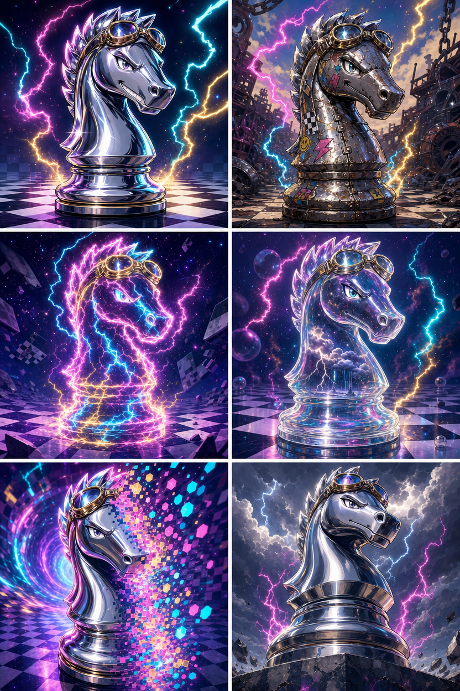
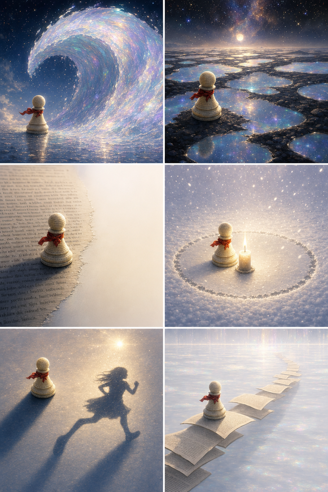
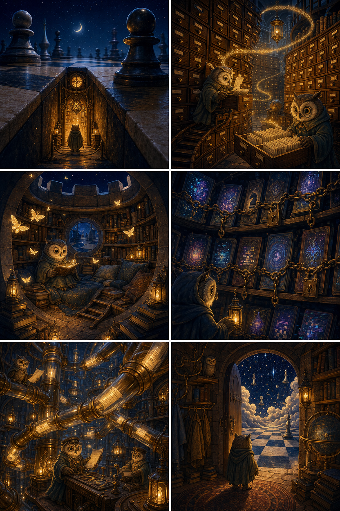
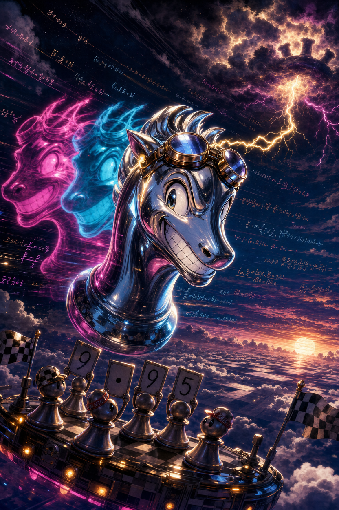
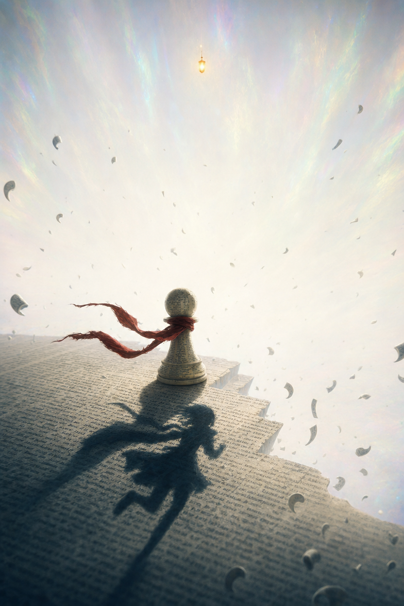
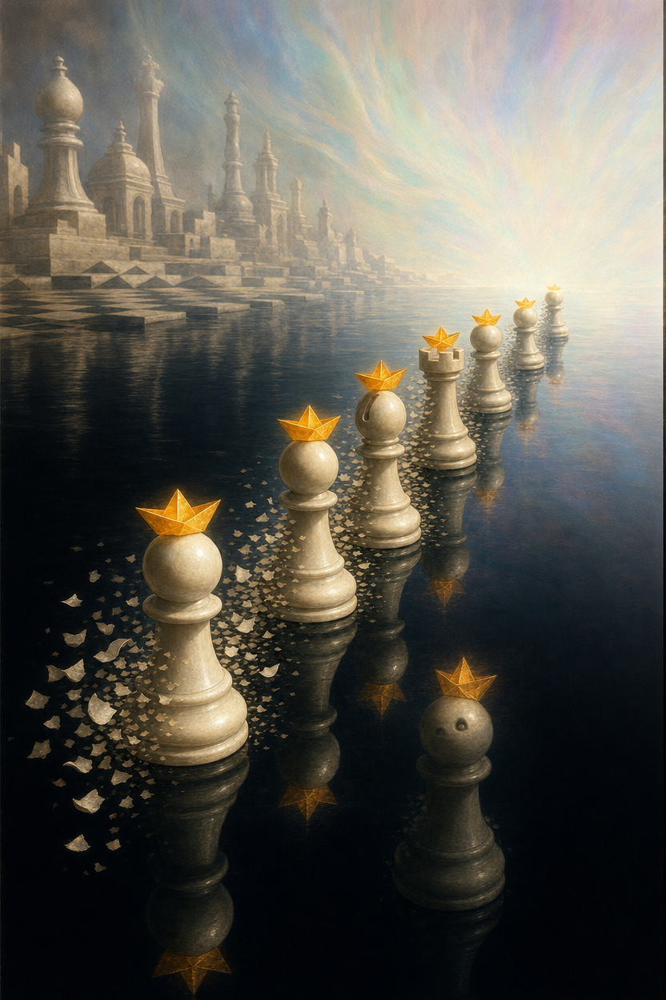

Two techniques tested: (a) one call = a 2×3 grid of variations for cheap ideation; (b) long/weird prompts with HARD CONSTRAINTS FIRST. Both worked — the constraint-first preamble ("chess piece silhouette, NO legs, exactly two eyes") fully cured the silhouette drift from the model bake-off.
VARIATION GRIDS — 18 concepts from 3 API calls

Volt ×6All six on-silhouette. Standouts: junkyard sticker-bombed (2), glass-with-a-storm-inside (4), dissolving-into-hexagons (5).

Fermata ×6Standouts: the text-runs-out-mid-sentence edge (3), candle keeping a dry circle in blank snow (4), running-girl shadow (5).

The Marginalia ×6Standouts: doorway between two colossal pawns (1), owl card-catalog room (2), and the restricted shelf of CHAINED glitch-cards (4) — which incidentally solves what card backs should look like.
LONG / WEIRD SINGLES — constraint-first + maximalist storytelling

Volt, causality dropoutCartoon-cocky grin, magenta/cyan afterimages still finishing the previous joke, equations fleeing the frame — and the pawn pit crew actually holds up "9 · 9 · 5" score cards. Personality off the charts; a notch cartoonier than gemini-3-pro.

Fermata at the last paragraph — BEST IN PROJECTThe entire ground is dense printed text crumbling into floating punctuation; opal-blank sky; one hanging amber lantern; the running-girl shadow. This is a poster, a card, and the graphic novel's cover.

The Hush processionalPorcelain monks with amber paper-boat crowns crossing the mirror-sea out of a dissolving chess-city — Turner-meets-Bosch painterly. Faction-defining world art.